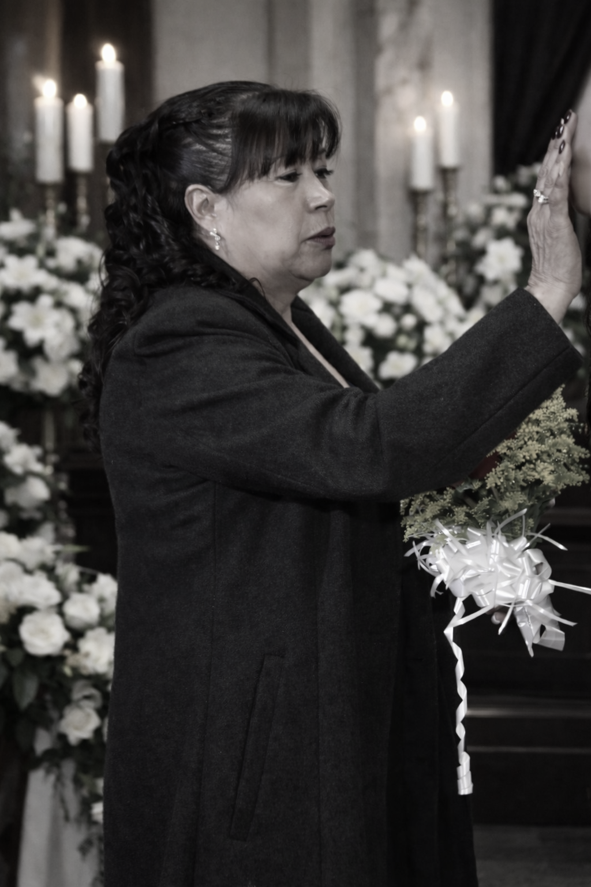

Aniversario luctuoso
En memoria amorosa de un legado que vive
Siempre en nuestro corazón
Concepción Lara Bazán
8 de diciembre de 1955 — 25 de enero de 2025
“El amor que diste sigue vivo en cada uno de nosotros.”

Acto Conmemorativo
Hoy honramos la vida de una madre y abuela incomparable.
Tus nietos y tu familia agradecemos cada enseñanza, cada abrazo y cada
momento compartido. Tu recuerdo nos acompaña y tu amor nos guía.
Descansa en paz.